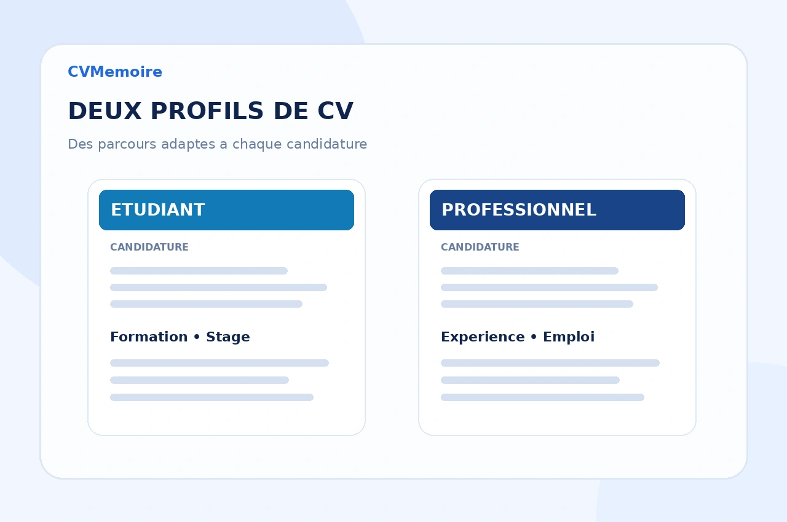

Accompagnement CV gratuit sur demande
Créez ou améliorez gratuitement votre CV en renseignant votre parcours, vos compétences et le poste ou la formation visé(e). Le document final est préparé au format PDF.

Parlez-nous de votre parcours
Remplissez les informations ci-dessous et joignez vos documents si nécessaire. Le formulaire est intégré dans CVMemoire : vous restez sur notre site pendant la demande.
Si le formulaire ne s’affiche pas, ouvrez-le directement sur Tally. Ce lien sert uniquement de secours.
Vos réponses et les fichiers que vous joignez sont transmis au service Tally pour traiter votre demande. Consultez notre politique de confidentialité. La réception de la notification par CVMemoire dépend de la configuration du compte Tally.
Avant d’envoyer votre demande
Le service de CV est-il vraiment gratuit ?
Oui. La création ou l’amélioration de CV proposée sur cette page est gratuite.
Puis-je envoyer un ancien CV ou une photo ?
Oui. Vous pouvez joindre un ancien CV, une photo ou un document de référence pour mieux orienter la mise en forme.
Comment recevrai-je le CV terminé ?
Le CV final est livré uniquement au format PDF sur WhatsApp, au numéro que vous avez indiqué dans le formulaire.